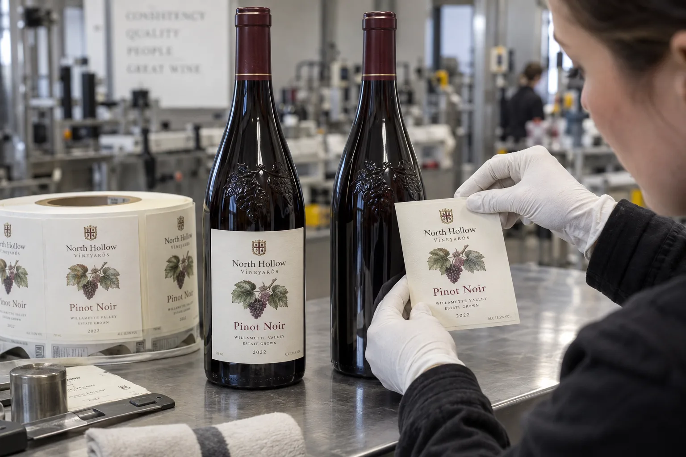

The label fits the smooth panel of the bottle held for the mockup. At the applicator, a different part of the bottle may face the label unless the process controls rotational presentation. A successful hand-positioned sample has not answered that line question.
Match the approved label footprint to the bottle orientations the actual process can present. A smooth panel is useful only when the label is placed there as intended.

AI-generated illustration retained on this article only. Fictional packaging, equipment and details; no measured result or actual customer/factory record.
Ask how the bottle reaches the application point
Ask the bottler whether the actual job uses a defined orientation feature and how that presentation is controlled. Record the equipment owner's description rather than inferring alignment from a machine photograph. A visually symmetric bottle can still have local relief, a seam or a specific smooth label panel.
Identify the proposed reference on actual bottles. If different bottle items have different features, preserve that distinction. A molded crest, glass seam and printed decorative mark are different possible references and should not be treated as interchangeable without the bottler's confirmation.
| Orientation review | Evidence or question |
|---|---|
| Bottle identity | Supplier/item and represented physical samples |
| Relief map | Raised areas, seams and proposed smooth panel |
| Label footprint | Actual cut path, height and intended placement |
| Process presentation | Controlled reference or permitted orientation range |
| Boundary comparison | Does the footprint remain clear within that presentation? |
| Open action | Revise footprint, establish presentation or evaluate another format |
The card does not introduce a universal clearance distance. Ask the actual parties to agree the geometry and placement variation that need evaluation.
Evaluate the permitted presentation, not a favored photograph
Use a scaled physical footprint to explore the identified orientations and inspect the full edge relationship. A sample selected only because it looks good from the front may hide a raised point beneath the rear or side edge.
If presentation is not controlled, tell the converter before approving the design. A smaller or relocated footprint may be a candidate, or the bottler may propose a suitable orientation process. Each option has consequences for artwork space, equipment and validation; none should be assumed available or cost-free.
Keep deliberate relief separate from changing surface behavior
An orientation record addresses where the label lands. It does not establish how the adhesive performs on that bottle finish. If a correctly placed label still changes during storage, retain the actual applied samples and investigate those conditions separately.
Similarly, label foil or embossing should be represented in the physical sample when relevant to the proposal. A flat paper silhouette identifies geometric conflicts but does not establish the behavior of the printed finished construction.
Transfer the approved relationship to the next owner
Include the bottle reference, label path and orientation condition in the release sent to the bottler. If the bottle or application process changes, reopen the affected relationship. Do not keep an approval photograph whose carefully chosen pose no longer represents production.
For separate questions see tapered label artwork, glass surface comparisons and repeatable placement inspection.
The bottle design spends part of your label area
Embossed glass can contribute to the bottle design while leaving a smaller smooth area for the intended label. Artwork dimensions alone do not show the physical relief beneath the proposed label.
Review actual bottle samples and the proposed printed label with the bottler and converter. A digital mockup does not establish the surface or orientation beneath the label.
Two wineries, two reasonable outcomes
Imagine a composite small winery changing to a new embossed bottle for a seasonal release. Its existing front label reaches close to the raised shoulder. A slightly shorter label may protect the presentation at very little extra design cost. Moving a line of optional story copy to the back is less painful than relabeling filled bottles.
Imagine a second bottling partner whose approved artwork already fits a generous smooth panel, but a few bottles show bubbles after application. A buyer could not shrink that label on instinct. A buyer could compare bottle lots, the glass seam, applied pressure and the condition of the bottles at the line. The package itself can vary even when the nominal bottle specification does not.
Measure what the applicator actually sees
Mark the smooth vertical area on several physical bottles, including its narrowest usable width and height. Keep clear of raised decoration, seams and the changing shoulder. Place a paper size sample on each, then inspect the edges while rotating the bottle. A digital mockup is useful for layout, but it cannot reveal an intermittent raised point under the label.
| Observation | First comparison | Likely decision |
|---|---|---|
| Edge reaches raised glass | Shorter or reshaped paper fit | Change size or placement |
| Bubble tracks the bottle seam | Label position across multiple bottles | Move the panel or control orientation |
| Only one bottle lot fails | Lot-to-lot surface variation | Review glass and application together |
| All lots fail after chilling | Dry and chilled retained samples | Trial a suitable full construction |
Approve the printed construction, not only the shape
Textured paper, foil and embossing on the label itself can change its flexibility. The most expensive finish is not automatically the best choice on an uneven bottle. Ask for production-like printed samples with the intended face, finish and adhesive, then run them on the actual glass under the expected bottling conditions. Record application appearance and later appearance after handling and storage.
If the bottler uses an applicator, agree roll direction, gap, core and line speed with its operator. Keep good and failed bottles plus an unused roll strip. Those are more useful than a single close-up of a bubble.
Put this in the next label brief
- Physical bottles from the intended glass lot, with the front-panel area marked.
- Label size, artwork revision and any textured or foil finish.
- Bottling temperature, bottle dryness and application method.
- Expected chilling, ice-bucket use and handling conditions.
- A named person to approve both appearance and line performance.
For wet presentation, compare our wine-label materials for ice buckets. If the raised glass is on the neck, use the neck-label fit guide.
Send the relevant project details
Discuss embossed-glass label placement with bottle views showing relief and smooth panel, proposed cut footprint and the bottler's known orientation process. The form opens an email draft; use listed email or WhatsApp for files. Placement variation, line capability and construction evaluation need confirmation.